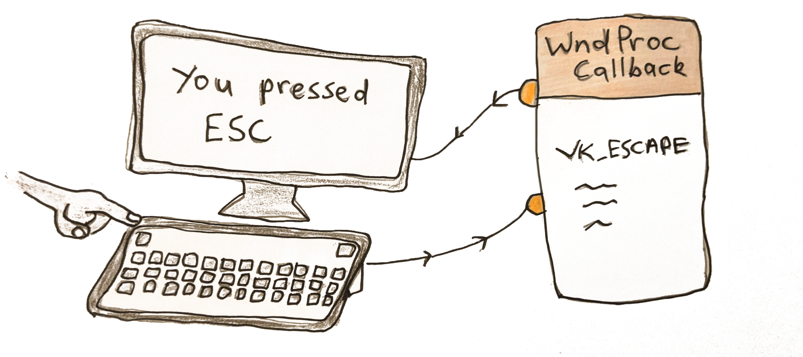
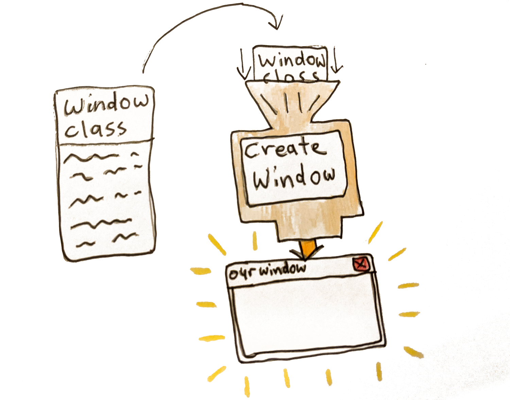
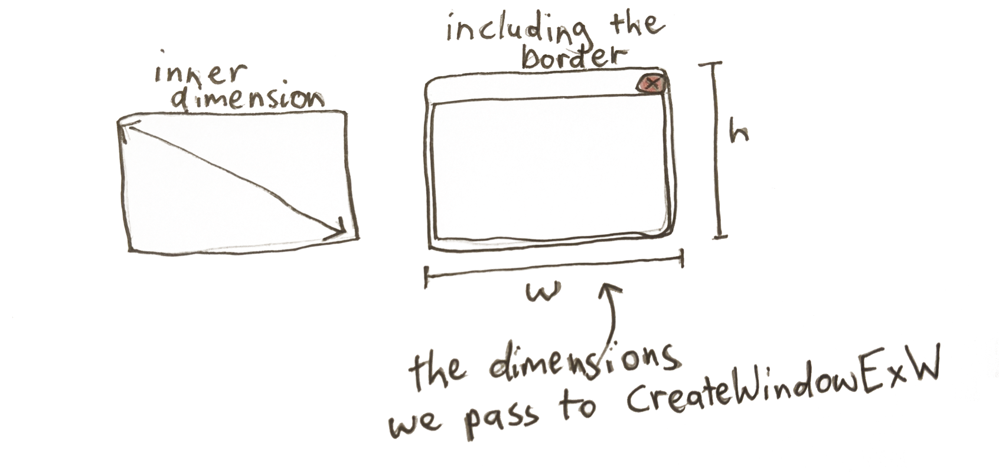
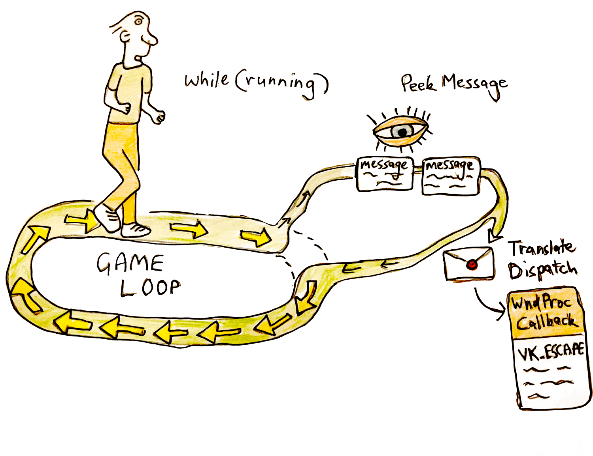
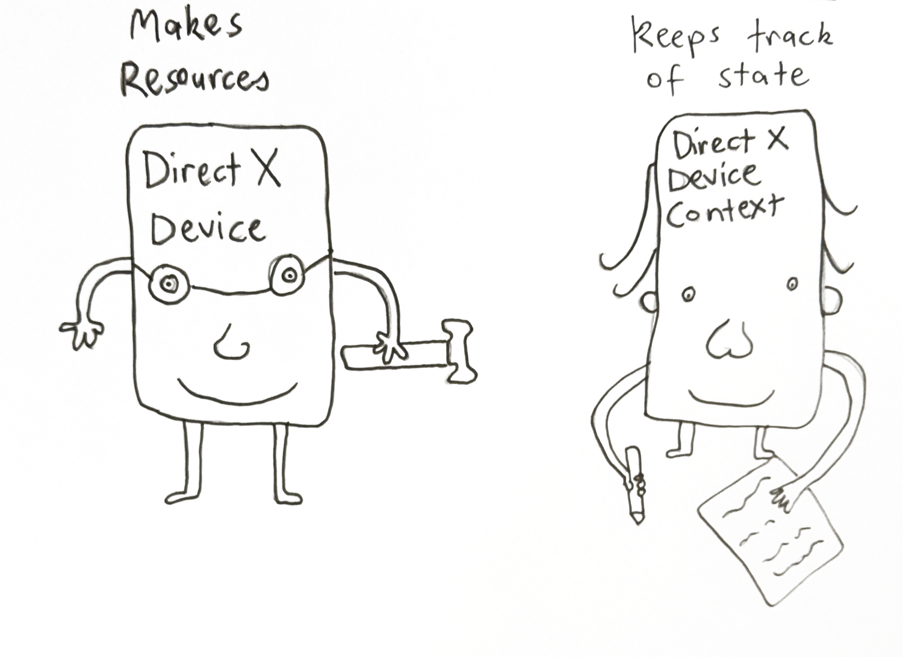
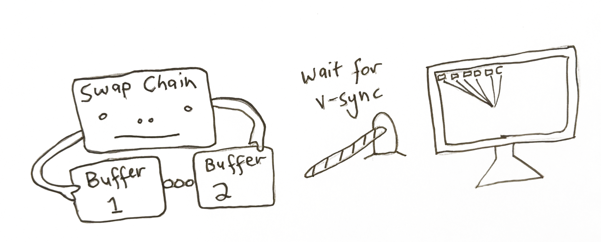
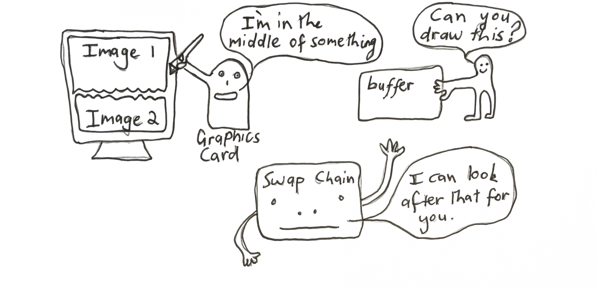
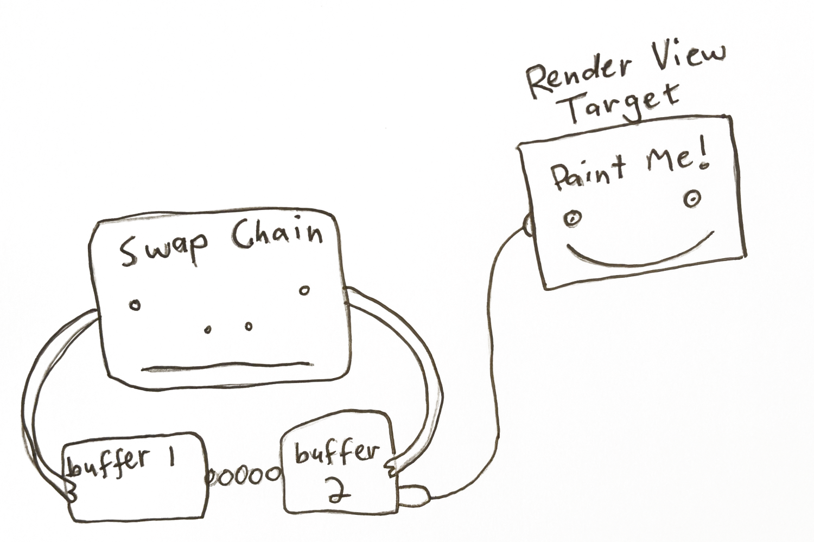
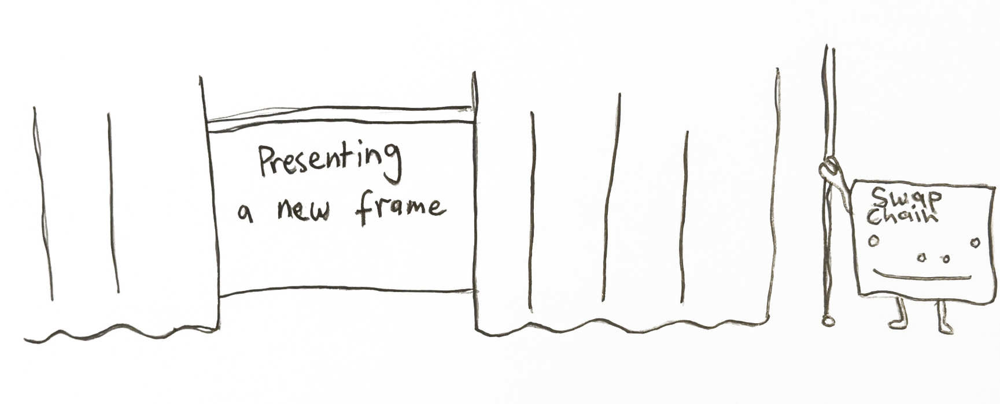
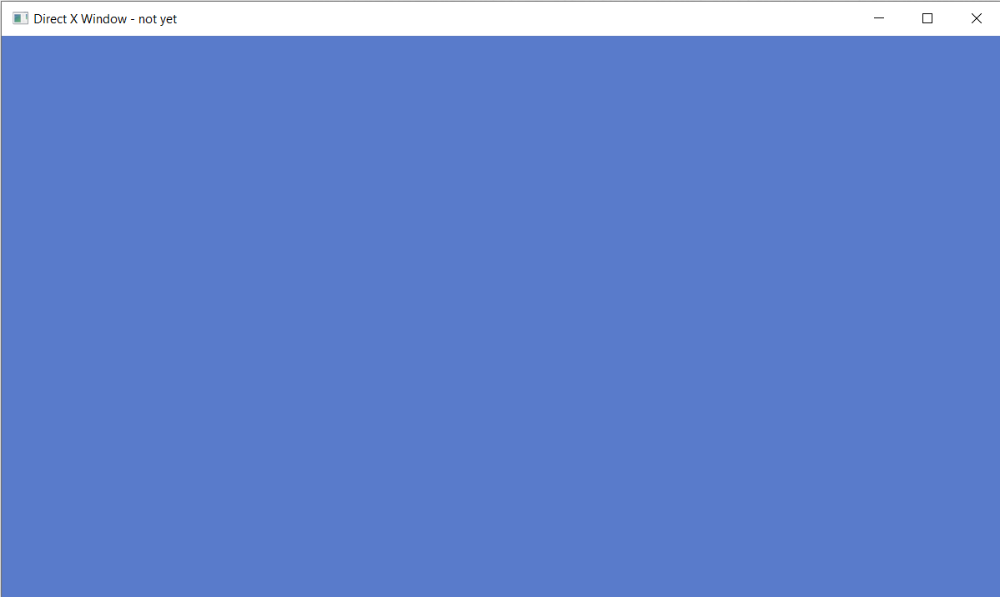

In this article, I’m going to walk through creating a DirectX 11 context to use with your games. DirectX 11 is the native graphics API for Windows. DirectX has advantages over OpenGL in that it is more reliable on Windows computers — this is an advantage when it comes time to ship your game. You want it to work on as many machines as possible with the least hiccups. You don’t want half your users (or worse!) to load your game up and find a blank screen. The other advantage over OpenGL is that DirectX is a lot easier to reason about. OpenGL is a giant state machine where you bind textures, vertex arrays, and options like blend modes which stay bound until you specifically unbind them or unset them. This can lead to bugs that can be hard to find. DirectX 11 API is less of a state machine, and more function calls that you can reason, making the experience of graphics program more enjoyable.
Let's get started! The first thing for any Windows program is the windows entry point which we’re going to stick into a main.cpp file:
We’ve commented out the variables we don’t use in our program — we only use the first variable of the function, the hInstance — this is the instance of our exe running, which we’re going to need to create a window.
We can compile this to make sure everything is working. We’re using the MSVC compiler from the command line so we’re going to type:
Great! Hopefully, there aren’t any compiler errors. Next, we’re going to declare a window class. This is something you create to choose the settings for the window we want to create. It looks something like this:
We declare a struct call winClass of type WINDCLASSEXW. Notice we’re using the W versions of the WinAPI functions. There is also the A type. The difference is that the W type support Unicode strings (W meaning wide characters or 2 bytes per character), whereas the A type only support ANSI characters (non unicode, with only 1 byte per character). So to be more up to date we’re using the W functions. There are two other things we’ll add to support unicode:
1. Put the define unicode at the top of our file. This tells other windows functions we’re supporting unicode so please help us.
2. Put L before a string literal. This tells the compiler to treat the string as a wide string (2 bytes per character). This looks like this L”MyWindowClass”.
The main thing to notice here is that we want a window that redraws when it is resized. We do this by passing the flags CS_HREDRAW | CS_VREDRAW. We’re also passing a pointer to a function called WndProc seen in the line winClass.lpfnWndProc = &WndProc;

This is the callback that handles events sent to our app like resizing, keyboard input, and exiting our program. We have to define it ourselves, so we’ll do that above our main function.
You’ll see that we’re handling the WM_KEYDOWN event in which we check if the key is escape. If so we destroy our window. We also handle the WM_DESTROY event, which we post a QuitMessage which we’ll handle in our message loop. All other events we give to the default function.
Next we’ll actually create our window.

We use the CreateWindowExW to actually create our window. We give it the windowclass we created before and give the window a name. We also are passing our hInstance (the handle to our exe) and some initial flags — WS_OVERLAPPEDWINDOW | WS_VISIBLE (we want a normal window type and we want our window to be visible). We also pass the initial size of our window. There is something to note here — the initial width & height of the window include the border, to get the actually inner dimension to be what we want we have to use
We pass in the dimensions we want for our inner window, and it gives back the dimensions including the border that we should pass to CreateWindow.

Great! If we compile this now we should see a window briefly appear then disappear again. Let’s do that.
To compile is now we need to pass a linker flag since we’re using functions that live in user32.lib
Now when we run this and run our main.exe, we should see our window briefly appear. To finish this lesson of we’re going to add the infamous game loop.

Below our CreateWindow function, we’ll write this:
If we ran this we’d be stuck in an infinite loop since we don’t handle our messages — specifically our exit message. This is where our WndProc callback is handled to process the events we received. We are going to use PeekMessage instead of GetMessage to receive our events. The difference is that GetMessage stays waiting for messages to process, instead of continuing on with the program. For a game you want PeekMessage.
Our WndProc callback is called via DispatchMessage. So all input is processed there. You’ll see we handle the WM_QUIT message here by setting running to false. This is when we press the Red X button or we press escape because we handle this in our wndProc callback.
Now if we compile it using the same code as above (cl main.cpp /link user32.lib) and run it, we’ll get a window that stays open. We can quit it by pressing the Red X or pressing escape.
Awesome! Well done. We’re on our way to getting a directX renderer going.
Ok next we’re actually going to jump into using DirectX. First we need to include the directX header file at the top of our main.cpp file.
First we’re going to create two things — a d3d11device and a d3d11DeviceContext. When we create a device, we’re specifying what type of d3d features we want (just d3d11, or d3d9 and d3d10 aswell?), whether we want software or hardware (using the GPU) rendering? And what type of pixel format do we want to support?

The device is in charge of creating resources (like shaders, frame buffers, and vertex buffers)and talking to the video adapter. You only want to create one device per program.
A device context on the other hand contains the circumstances or setting in which the device is used. It’s specifically used to generate render commands using the resources owned by the device. We use the d3ddevice to create resources like shaders, vertex buffers, textures & framebuffers. And we use the device context to set the render states like setViewport, setShader, setVertexBuffers and submit draw calls — the context in which we are using our resources.
To create these two things we use function D3D11CreateDevice, passing in a pointer to a ID3D11Device and a pointer to ID3D11DeviceContext to be filled out. It looks like this:
We want Direct11 features, hardware rendering, a device with BGRA support and in a debug build we want to create a debug device to find errors in our program.
There’s one more catch here. There are newer versions of ID3D11DeviceContext and ID3D11DeviceContext aptly called ID3D11Device1 and ID3D11DeviceContext1 which have more functionality. Since we would rather have these, we query the device we just created to get a newer one. It looks like this:
We use QueryInterface to get the type of ID3D11Device1 from our device. And the same on our deviceContext. We then release the original device and device context.
Awesome! Now we can check if this compiles. We’re going to link to d3d11.lib for it to work. Our command line build script would now look like this:
Also make sure you include assert at the top of main.cpp
Great! Next we’re going to activate the debug layer in our deviceContext. You saw when we made the deviceContext, we asked for a debug compatible context with the flag D3D11_CREATE_DEVICE_DEBUG. To enable break on d3d errors we again query the deviceContext.
We get the ID3D11Debug object from our device using QueryInterface. Once we’ve got that, we can get the d3dInfoQueue from it. We then use the SetBreakOnSeverity function to say what errors we want to break on.

The next step is to create a SwapChain. This is a collection of buffers that are used for displaying frames to the user. We render to one of these buffers in the swap chain while one is drawn to the screen. More than one buffer is used to avoid tearing. This happens when we try render to the same buffer while it’s being drawn to the monitor, resulting in an old image on the upper half of the screen, with the new image on the lower one. Instead we have 2 or more buffers that we can ping-pong between. We draw to one (named the backbuffer), while the other is being displayed to the user.

To create the SwapChain we first need to create DXGI Factory which is used for generating objects that handle fullscreen transitions (namely the swapchain). It’s another case of using QueryInterface and other helper functions to drill down and get the final object we need. It looks like this:
We get the dxgiDevice from our d3d11Device. Then we call GetAdapter we gives us back the video adapter (IDXGIAdapter) directX is using — this represents your graphics card. We can see specifically what it is, using the GetDesc function on it as seen above-in my case it’s using the integrated graphics card.
The parent of the adpater is the dxgiFactory that was created when we create our d3d11Device. Phew! We’ve got our dxgiFactory that is in charge of creating the SwapChain[1]. So now let’s create it!
Now we will create our SwapChain. We use the function CreateSwapChainForHwnd. We also need to create the description of the buffer we want to create. What pixel format it will be in (we want 8bits per color B8G8R8A8 also want the output to be SRGB). The width and height of it. Whether it is a multi-sample buffer. How many buffers we want in our swapchain (we want at least 2 to avoid tearing). How we want our back buffer to respond when the window is a different aspect-ratio and size.
This is what that looks like:
Since these are the buffers that we are drawing to, we set the BufferUsage to DXGI_USAGE_RENDER_TARGET_OUTPUT. Since we aren’t reading from the buffer, we don’t care about the alphaMode. We also must choose an option for how the buffer is presented to the screen in the SwapEffect variable. Since we are rendering the complete scene from scratch into the buffer each frame, we don’t need to rely on past rendering to still exist in the buffer. Because of this we use the swap effect DXGI_SWAP_EFFECT_DISCARD, instead of the DXGI_SWAP_EFFECT_SEQUENTIAL [2].
Now that we’ve got our SwapChainDescription, we are ready to create it using CreateSwapChainForHwnd, passing in our device, our description and our windowHandle:
We also release our pointer to the dxgiFactory since we no longer need it.

Ok, we’ve got our d3d11Device, our d3d11DeviceContext and our SwapChain. We these three things we are able to render to our window.
The very last thing we need to do before we do this is to get access to the backbuffer in our SwapChain to draw to. This is represented as a ID3D11RenderTargetView, which looks after the writable part ofwhat we’re rendering into.
To get this from the backbuffer in our SwapChain we do the following:
We use the GetBuffer function from our swapChain, passing the buffer index as zero, since this is the only buffer we can acces with the swap effect DXGI_SWAP_EFFECT_DISCARD. Once we get it, we can then create a RenderTargetView.
So we’ve got all the tools to do the rendering for us (the deviceContext and swapchain) and we’ve got the buffer we’re going to render into — the RenderTargetView of the backbuffer.
Time to get rendering!
In our game loop, after we’ve processed our messages, we’re going to clear the renderTarget to a blue color. It looks like this:
We’re using our d3d11DeviceContext which looks after the rendering commands to clear a render targetView — the backbuffer one we created.

Then to finish the frame off we use our swapchain, calling present. This says we’re done all rendering for this frame, it’s time to present. This is the equivalent to the OpenGL command wglSwapBuffers.
The first argument is the sync interval-how were syncing with V-sync. A zero means don’t wait for v-sync, just display the image now. A value 1 to 4 means synchronize presentation after these number of vsyncs. i.e how many number of vsyncs we wait for till we can keep rendering. We want to keep up with the montior refresh rate, so we choose one. This value is the same as wglSwapIntervalEXT() with openGL.
The second argument is how we want to present the frames to the output. A zero means we present a frame from each buffer starting with the current buffer — that is we’re using the sequencing ability of writing to one frame while the other one is being read, and flipping them on present.
We made it. When we compile the game and run it we should hopefully get a light blue screen.

You made it through the whole Part 1 lesson. Congratulate yourself! It’s no mean feat doing computer graphics at a low level.
In Part 2 we’ll render a colorful triangle to the screen, well on the way to rendering full 3d models. See you then!
What function to we use to create a Window?
[CreateWindowExW]
What do we need to pass to CreateWindow?
[A windowClass which we register before creating a window. It also contains the function pointer to out event callback wndProc for handling input]
What do we do at the start of every game loop?
[We process the messages that have come in using PeekMessage.]
When is our WndProc function called?
[When we use DispatchMessage()]
What were the four directX objects we needed to create before rendering to our Window?
[d3d11Device, d3d11DeviceContext, IDXGISwapChain, and a ID3D11RenderTargetView. At least one Device is needed to use DirectX. It’s in charge of creating resources. The DeviceContext is used to set the state in which we will use GPU. We use the DeviceContext the most during rendering our scene. The RenderTargetView represents the buffer we’re drawing into]
What function submits our final buffer to the GPU?
[swapChain->Present() function. It takes two parameters: the sync interval and how we want to display the buffers]
Why do we need at least two buffers in the swap chain?
[To stop tearing — that is we start updating the buffer that is being displayed to the screen, causing one half of the buffer to be the original image and the other half the new one we are writing to it. Instead, we ping pong between the buffers in the SwapChain]
[1] It should be noted you can just use D3D11CreateDeviceAndSwapChain which creates both at the same time. It was separated to show more of what is happening behind the scenes.
[2] There are newer versions of these values: DXGI_SWAP_EFFECT_FLIP_DISCARD and DXGI_SWAP_EFFECT_FLIP_SEQUENTIAL which are recomended to be used. Although these are only avaiable on Windows 10